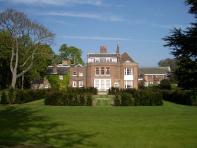
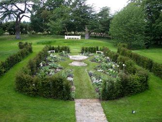
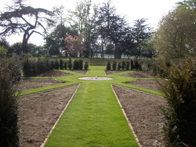

A stunning private house on the Hampton Court Palace Estate. The brief was to create a geometric yew-hedged black and white garden.





Diggers were used to make the trenches for the yew trees. These were filled with plenty of well-rotted manure to provide a boost to growth.


Cedars of Lebanon offer a strong backdrop

while a marble fountain provides tranquility